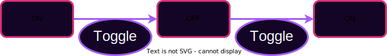

<!DOCTYPE html>
<html lang="en">

<head>
  <meta charset="utf-8" />
  <meta name="viewport" content="width=device-width, initial-scale=1.0, maximum-scale=1.0, user-scalable=no" />

  <title>Digital Services as State Machines</title>
  <link rel="icon" href="./../../assets/favicon.svg" />
  <link rel="shortcut icon" href="./../../assets/favicon.png" />
  <link rel="stylesheet" href="./../../dist/reset.css" />
  <link rel="stylesheet" href="./../../dist/reveal.css" />
  <link rel="stylesheet" href="./../.././assets/styles/PBA-theme.css" id="theme" />
  <link rel="stylesheet" href="./../../css/highlight/shades-of-purple.css" />

  <link rel="stylesheet" href="./../.././assets/styles/custom-classes.css" />

</head>

<body class="site">
  <header class="site-header">
    <!-- This logo is a link only on the watching server, not the production build -->
    <a href="">
      
    </a>
  </header>
  <main class="reveal">
    <article class="slides">
      <section  data-markdown><script type="text/template">

# Digital Services as State Machines
</script></section><section  data-markdown><script type="text/template">
## Web0

Telegraph, Telephone

Users transmit information peer-to-peer.

Crypto not typically used except by military, but upheld guarantees when used.


<aside class="notes"><p>I want to go through a brief history of the web.
This is not a history course, but it is important to understand the context of the web and how we got to where we are today.
I will be using the term &quot;web&quot; to refer to the internet, but I will also be using it to refer to the world wide web.
The internet is the physical infrastructure that allows computers to communicate with each other.
The world wide web is one of the several utilizes including e-mail, File Transfer Protocol (FTP), Internet Relay Chat (IRC), Telnet, and Usenet that form the Internet.
Okay so let&#39;s back up before all of that though - The term web0 isn&#39;t a common nomenclature - but basically this is old school Telegraph and telephones and in this era users transmitted information peer-to-peer.
There was no intermediary.
There was no service provider.
There was no web server.
There was no database.
I would call up a friend - be connected via a wire - and we would talk, end to end.
sure there are switchboard operators, but you could think of it as one really long wire connecting me to my friend I&#39;m calling.
Which is actually a perfect scenario for cryptography to uphold its guarantees.
Once I talk to the switchboard operator and get routed to you, then we can just talk over our Cipher.
It&#39;s really peer to peer, which is great!
However, people were not really aware of the threat model and cryptography was not really used except by the military.
But when it was used, it was used to uphold its guarantees.
So this is like a property that we want to try to restore in web3.</p>
</aside></script></section><section  data-markdown><script type="text/template">
## Web1

Introduction of always-on servers.

Still mostly peer-to-peer.

Cryptography more often, but still not ubiquitous.


<aside class="notes"><p>Web 1 brings us to the 70s and 80s (maybe early 90s).
This is an introduction to always-on servers.
so with web0, with the telephone - I pick up my phone when I&#39;m calling someone or when someone calls me and then I put it down and I&#39;m offline the rest of the time.
But in web1, we have these always on servers but it&#39;s still mostly peer-to-peer because people, at least two kind of a first order approximation had their own servers so in the clipart, we&#39;ve got users and their servers - these pink lines are a connection to your own server.
So this user has her own server and these two users maybe share a server - I don&#39;t know, they work for the same company or go to the same University or something and then this user doesn&#39;t have her own, maybe she&#39;s just consuming information and she&#39;s more of a casual user.
So web1 is pretty similar to web0 and cryptography did start to become used a little bit more, but it still was not very ubiquitous and it&#39;s basically just because of the kinds of applications that people were using web1 for - it was mostly just for sharing information.
Classic example is publishing - you would publish your paper or your data set and the whole idea is if you&#39;re publishing something, you really don&#39;t need to be keeping it secret, and in fact you&#39;re actually trying to NOT have it be secret.
You&#39;re trying to put it out there for everyone to use and read.
Now authenticity guarantees for sure would have still been great here - to know that your data didn&#39;t get tampered with along the wire...
but again the threat model just wasn&#39;t in practice quite so bad and so like people got away without cryptography.</p>
</aside></script></section><section ><section data-markdown><script type="text/template">
## Web2

Introduction of **Digital Services** with **Rich State**.

Administered by service providers: "Send _us_ your information."

However, users must place faith in the service provider.

Cryptographic guarantees are about interactions with the service provider, not peers.


<aside class="notes"><p>So that brings us to web2.
1999 or 2004, wherever you want to put it really.
Web2 brings the introduction of Digital Services with Rich state - so we&#39;re talking about web apps.
Who here remembers Myspace? I was obsessed with curating my top 8.
And then of course Facebook or whatever social media platform and beyond.
But it&#39;s not just media either, there&#39;s eBay and Amazon and you can register to vote online and there&#39;s all these Services where you just go online you fill some data into a web form - maybe you don&#39;t even have to do a page reload - and that basically submits a transaction to some back-end server somewhere!
So we begin to get these really really useful Digital Services.
You can even think about things like Google search for example, that hardly existed in web1.
Notice that there are no more pink lines in the diagram - people don&#39;t have their own servers - they&#39;re all connected to this one Central server.
Obviously in reality it isn&#39;t a single Central server, but the the point kind of remains - it&#39;s a small number of centralized service providers.</p>
</aside></script></section><section data-markdown><script type="text/template">
## Digital Services

People rely on digital services every day.
They are inescapable and valuable.

- Game Servers (AOE or Minecraft)
- Twitter, Instagram, Facebook, etc.
- Journalism and sources
- Banks
- Lawyers, notaries, regulators

<aside class="notes"><p>I should note - Digital services are not bad in and of themselves.
They are very valuable.
We use all of these every day.
We are even using some to administer this course.
But they are also hard to escape.
What are other examples? I have some listed here - online banking, what else?</p>
<p>And the key thing here is that they&#39;re all administered by these service providers and the model is - don&#39;t call your friend on the phone and communicate directly with them anymore - instead send us your information -</p>
</aside></script></section><section data-markdown><script type="text/template">
## Trust Example

Two users on Twitter:

- Trust that we are seeing information from the same database\*
- Trust that if a tweet is from X, then X wrote that tweet\*
- Trust that others see our messages as from us\*
- Trust that the messages we see are the messages the users wrote\*
- Trust that we're interacting with the application as equals

<aside class="notes"><p>Or rather, send your Tweet directly to Twitter server and then we&#39;ll publish it and then when your friend comes to us, we&#39;ll tell them that this is what you tweeted.
trust me bro, this is what lauren tweeted, it&#39;s real.
So this is asking you to place trust in the service provider.
Once web2 became popular, cryptography became a bit more widespread.
Look at the icon at the top of your browser - let&#39;s use github for example - That is ensuring me that I&#39;m communicating over SSL to GitHub and they&#39;re encrypting all the communication and I am too, which is awesome! Because suddenly we&#39;re using this really cool cryptography that we&#39;ve been developing over decades!
But here&#39;s the thing - say if you go to pull my repo, you&#39;re not pulling it from me anymore, you&#39;re pulling it from github.
So GitHub knows that nothing was corrupted between me and them and you know that nothing was corrupted between GitHub and you.
But the thing is, github&#39;s right there - they could change my repo if they wanted to or they could maybe even have the power to take my repo offline.
But here, the slide reminds us that we all essentially accept a trusting relationship with the service provider.
We trust that we&#39;re seeing information from the same database, we trust that if a tweet is from Aaron, then Aaron wrote that tweet, we trust that others see our messages as from us, we trust that the messages we see are the messages the users wrote, and we trust that we&#39;re interacting with the application as equals.
Cryptography actually provides a lot of these guarantees, but not when an intermediary has stepped in between users.</p>
</aside></script></section><section data-markdown><script type="text/template">
## God Mode Enabled

In web 2, service providers can perform abuses:

- Censoring user interaction
- Restricting users interaction
- Failing to produce requested data
- Mutating state opaquely

<aside class="notes"><p>Okay in summary, these are the problems that trusted service providers can do to us.
They can censor our interactions, they can restrict our interactions, they can fail to produce requested data, and they can mutate state opaquely.</p>
</aside></script></section><section data-markdown><script type="text/template">
## Thought experiment: Digital Currency

Bitcoin's application was digital currency - a trivially simple application.

Could this be built with Web2 technology?

<aside class="notes"><p>Let&#39;s do a thought experiment.
Bitcoin came out 2009, it&#39;s a trivially simple application.
n Bitcoin&#39;s application was digital currency.
When you think about just the money thing - sending money from one person to another.
How many of you think that if I give you like a weekend hackathon project, you could develop some kind of web2 style service and deploy it to AWS or digitalocean or wherever - that would basically act like a currency where I could log in and send my peers money.
Could you build this with web2 technology?
Yep you absolutely could.
This is the kind of simple app you might build in a Freshman year course.
You just need to maintain a set of bank notes and their owners (or alternatively a set of accounts and their balances.)
So why didn&#39;t this exist in web 2? I hope this is pretty obvious.
Because the provider could print money.
Or steal money.
Right? The moment somebody pisses me off I can go and freeze their funds or whatever.
So even though coding the cryptocurrency application is like super simple it&#39;s totally useless because there&#39;s no incredible way to build trust in it.
And that&#39;s what the blockchain is about.
And that&#39;s what Joshy is going to speak to very soon.</p>
</aside></script></section><section data-markdown><script type="text/template">
## Distributed Applications in Web 2

Providers run redundant data centers to prevents accidents.

But it still assumes benevolent participants and some trusted leader.

<aside class="notes"><p>Something we should call out - there are some distributed applications in web2, but it&#39;s a little bit different than what we&#39;re talking about here.
It&#39;s not like AWS folks are noobs and they have all their stuff in one Data Center and the moment that there&#39;s an earthquake or a fire or whatever everything that hosted on AWS goes down.
They&#39;re better than that, they have data centers all over the world.
But the difference there is that all of those data centers are operating as trusted peers.
So one of them will lead and those changes will be synced to the others and the moment one goes down it fails back to the next one to keep the services live.
Which is for sure a good thing, I&#39;m not hating on that aspect of it, but the point that I&#39;m making is that it doesn&#39;t make it trustless just because it&#39;s geographically distributed.
It just makes it more resistant to accidents.
AWS could still cut it down.
Ultimately, the point is that in web2, the masses become beholden to the service providers who were free to extract value and manipulate the users.</p>
</aside></script></section></section><section ><section data-markdown><script type="text/template">
## Web3

A provision of digital services without the need to trust a service _provider_.

Providers do not need to be trusted; they are economically incentivized to behave honestly.

<aside class="notes"><p>Okay so web3 - We want to maintain the value, versatility, and richness of Web2, but remove the trust, and possibility of extractive behavior.
Here I have: It&#39;s a provision of digital services without the need to trust a service provider.
At an abstract level, the way that we make people trustworthy is that we give them economic incentives to behave honestly.
So throughout this course we&#39;re going to design protocols and we&#39;re going to say things like, as long as two-thirds of the operators in this protocol are following the protocol, then all these guarantees I talked about are upheld! That&#39;s great.
But then the glaring question is: well okay - how do you make sure that two-thirds of the operators are following the protocol? It always come back to economic incentives.
Hence why you had econ and tokenomics last week.
Because that&#39;s how we&#39;re going to get all of these mutually distrusting, not otherwise incentive aligned parties to agree to follow the protocol - by creating the incentive such that following the protocol is the best strategy: they can maximize their own utility by following the protocol.</p>
</aside></script></section><section data-markdown><script type="text/template">
## Desired Approach

Allow users to interact with a common system without trusting any intermediaries.

Opens the door to new application stacks:

- Shared state and state change rules
- Custom rendering, moderation, interfaces

<aside class="notes"><p>We want to allow users to interact with the system without having to trust intermediaries who might stand in the middle between the users.
If we can do that, it opens the door to this new application stack where we disentangle all the layers.</p>
<p>OKAY - so we&#39;re at the halfway point within this lecture, let&#39;s check in.
At this point, we&#39;ve been through the history of the web and hopefully understand the evolution from simple peer to pee communications to straight up digital services.</p>
<p>Adding to that, from my from first lecture, we ALSO understand that both software and contracts are solutions to expressing agreements, and during Aaron&#39;s activity, we practiced building a simple web2 style smart contract.</p>
<p>Now I want to start formalizing the semantics of how we actually build a smart contract.</p>
<p>It turns out there is a mathematical (or computer science maybe?) term called a state machine.
And it maps really well to what we just built and the kinds of interactions we want to build.</p>
</aside></script></section></section><section ><section data-markdown><script type="text/template">
## State Machines


<aside class="notes"><p>What&#39;s interesting is that most systems, maybe all of them, but definitely most that we care about can be modeled as state machines.
So State machine, it&#39;s not a real machine that you can build and touch and operate and stuff like that.
It&#39;s a model comprised of a set of states and a set of rules about how to transition between the states.
Looking at the diagram, maybe my state machine starts in state one over here and then somebody pokes it in some particular way, or to use more blockchain-y lingo, they send a transaction and that puts the state machine into into State-two.
And so, what we&#39;re going to be doing with the blockchain is tracking a complete history of all of these transitions and if we know the history of all the transitions, then we should know what state we&#39;re in right now</p>
</aside></script></section><section data-markdown><script type="text/template">
## Labelled Transition Systems

Sometimes you can map the entire state space as an LTS.

Other times it is too big.


<aside class="notes"><p>There&#39;s this notion of a labelled transition system.
Sometimes if your state machine is simple enough you can actually map the entire State space as a labeled transition system.
Most of the times when we&#39;re building real world applications, it&#39;s a little too big.
But labeled transition systems are a really good model to keep in your mind when you&#39;re thinking about designing your state machines.
Consider if we tried to map all possible states of a social media app or a digital currency.
Sometimes an LTS drawing like this is useful, other times it would be too large or even infinite.
Even still, sometimes drawing part of it can help you think about what the states and transitions might be.</p>
</aside></script></section><section data-markdown><script type="text/template">
## Example: Light Switch

Simple Switch: 2 States, 1 Transition

**Labelled Transition System** <!-- .element: class="fragment" data-fragment-index="2" -->

 <!-- .element: class="fragment" data-fragment-index="2" -->

**History** <!-- .element: class="fragment" data-fragment-index="3" -->

 <!-- .element: class="fragment" data-fragment-index="3" -->

<aside class="notes"><p>Let&#39;s look at a simple example.
A light switch.
CLICK
It has two states: on and off.
And one transition: flipping the switch.
We can draw this as a labeled transition system.
CLICK
And we can also draw a history of the transitions that have happened.
So if we know the history of all the transitions, then we should know what state we&#39;re in right now.
So we start in some State down here for example where the light is on and then when a transition comes in it&#39;s we already know what kind of transition it&#39;s going to be.
There&#39;s only one - it&#39;s the toggle transition that turns the light off and Etc and Etc and this could go on forever.
Right now this is such a simple State machine that like this isn&#39;t going to be a very interesting history it&#39;s just going to be toggle toggle toggle toggle forever.
But with that information, if if for some reason knowing whether this light was on or off is like super important to your Society or your community, you&#39;ve now achieved it - or at least we know a way to start achieving it.</p>
</aside></script></section><section data-markdown><script type="text/template">
## State Machine Example: Digital Cash

Each state is a set of bank notes.
Where a bank note has an amount and an owner.
A transition involves a user consuming (spending) some bank notes and creating new ones.


<aside class="notes"><p>Let&#39;s look at a more interesting example.
Digital cash.
This is one where I can&#39;t draw the entire label transition system because it&#39;s way too huge.
But I can draw a little bit of it.
Each state is a set of bank notes.
Where a bank note has an amount and an owner.
A transition involves a user consuming (spending) some bank notes and creating new ones.
Not all conceivable transitions are valid.
Imagine a user consuming a bank note worth 5 coins, and creating two new ones each worth 3 coins.
That&#39;s not allowed.
So we have to be careful about what transitions are allowed and what transitions are not allowed.
And again, if we know the history of all the transitions, then we should know what state we&#39;re in right now.</p>
</aside></script></section><section data-markdown><script type="text/template">
## Sate Machine Example: Social Media

Each state is a set of posts and their associated comments and emoji reaction counts.
A transition involves, making a new post, or reacting to someone elses, or commenting


<aside class="notes"><p>state is a set of posts and their associated comments and emoji reaction counts.
A transition involves, making a new post, or reacting to someone elses, or commenting
There is not a single model here.
Some state machines will allow deleting or editing posts, while others will not.
Some will allow disliking posts while others only allow liking.
Here the diagram basically we see - if the state starts out simple with this one Post in it and then someone makes a new post (and there would have to be more details in here about who&#39;s posting and what they&#39;re posting)But then we get to this new state and then maybe the next transition is that somebody likes post number one and so now the state contains a record that this thing is liked.
Just to drive the point home the idea is that if you know the starting State and you know the history of the transitions, then you know the the current state and so you can sit and watch as every transition comes in you can validate them yourselves and say this one&#39;s good we&#39;re adding it to our history or this one&#39;s bad we&#39;re chucking it&#39;s invalid transition.
And then therefore you can know the final state</p>
</aside></script></section><section data-markdown><script type="text/template">
## More State Machine Examples:

<pba-flex center>

- Ride sharing platform
- Voting system
- Blackjack table
- The app you just built

</pba-flex>

<aside class="notes"><p>There are all kinds of these - uber, polkadot&#39;s governance, and gambling!
Take a moment to brainstorm with your table about each of these three examples as well as the app you built in the previous activity.
For each example, write out what are the state transitions and the the states.
If possible, draw a complete LTS.
If that is not possible, draw a partial LTS.</p>
</aside></script></section><section data-markdown><script type="text/template">
## Garage Door Lock


<aside class="notes"><p>One more team exercise.
Draw a state transition diagram for a garage door lock keypad.</p>
<p>If the user enters the correct 4 digits, the door opens (or closes if it was already open).
The thing is, you could enter some random digits before you enter the correct code, and it would still open after the correct code.
As you sketch your states, be sure to handle that correctly.</p>
<p>This example is drawn from <a href="https://eng.libretexts.org/Under_Construction/Book%3A_Discrete_Structures/09%3A_Finite-State_Automata/9.02%3A_State_Transition_Diagrams">https://eng.libretexts.org/Under_Construction/Book%3A_Discrete_Structures/09%3A_Finite-State_Automata/9.02%3A_State_Transition_Diagrams</a> which has many other excellent examples</p>
</aside></script></section></section><section  data-markdown><script type="text/template">
## Build Some State Machines

Blockchain From Scratch Activity

Chapter 1 State Machines

<aside class="notes"><p>This activity is going to run over the next four days.
We will have a good amount of time to work on it in class.
We will also set some minimum completion goals each evening.</p>
</aside></script></section>
    </article>
  </main>

  <script src="./../../dist/reveal.js"></script>

  <script src="./../../plugin/markdown/markdown.js"></script>
  <script src="./../../plugin/highlight/highlight.js"></script>
  <script src="./../../plugin/zoom/zoom.js"></script>
  <script src="./../../plugin/notes/notes.js"></script>
  <script src="./../../plugin/math/math.js"></script>

  <script src="./../../assets/plugin/mermaid.js"></script>
  <script src="./../../assets/plugin/mermaid-theme.js"></script>

  <script src="./../../assets/plugin/chart/chart.js"></script>
  <script src="./../../assets/plugin/chart/chart.min.js"></script>

  <script src="./../../assets/plugin/tailwindcss.min.js"></script>

  <script>
    function extend() {
      var target = {};
      for (var i = 0; i < arguments.length; i++) {
        var source = arguments[i];
        for (var key in source) {
          if (source.hasOwnProperty(key)) {
            target[key] = source[key];
          }
        }
      }
      return target;
    }

    // default options to init reveal.js
    var defaultOptions = {
      controls: true,
      progress: true,
      history: true,
      center: true,
      transition: 'default', // none/fade/slide/convex/concave/zoom
      slideNumber: true,
      mermaid: {
        startOnLoad: false,
        logLevel: 3,
        theme: 'base',
        themeVariables: {
          primaryColor: purple,
          primaryTextColor: white,
          primaryBorderColor: pink,
          lineColor: pink,
          secondaryColor: lightPurple,
          tertiaryColor: lightPurple,
        },
      },
      chart: {
        defaults: {
          color: 'lightgray', // color of labels
          scale: {
            beginAtZero: true,
            ticks: { stepSize: 1 },
            grid: { color: "lightgray" }, // color of grid lines
          },
        },
        line: { borderColor: ["#ccc", "#E6007A", "#6D3AEE"], "borderDash": [[5, 10], [0, 0]] },
        bar: { backgroundColor: ["#ccc", "#E6007A", "#6D3AEE"] },
      },
      plugins: [
        RevealMarkdown,
        RevealHighlight,
        RevealZoom,
        RevealNotes,
        RevealMath,
        RevealMermaid,
        RevealChart
      ]
    };

    // options from URL query string
    var queryOptions = Reveal().getQueryHash() || {};

    var options = extend(defaultOptions, {"width":1400,"height":900,"margin":0,"minScale":0.2,"maxScale":2,"transition":"none","controls":true,"progress":true,"center":true,"slideNumber":true,"backgroundTransition":"fade"}, queryOptions);
  </script>


  <script>
    Reveal.initialize(options);
  </script>
</body>

</html>
